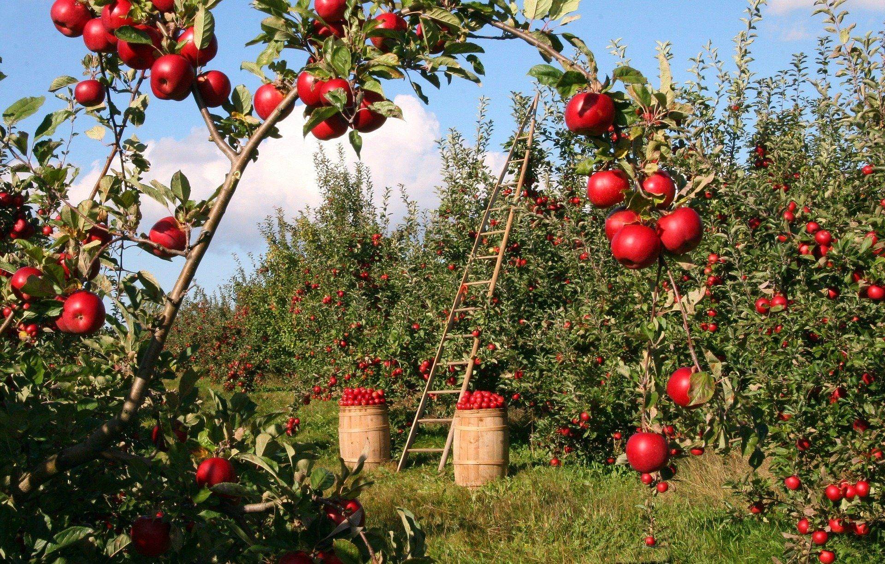

The Dust
Your Kids May Be Inhaling Without You Knowing
By now, you may have heard the unsettling reports: demons are influencing families to replace their pillows.

At first, this may sound harmless… Even practical, after all, a new pillow seems innocent enough. But these replacements are not ordinary pillows. They are horsehair pillows! Pillows filled with real horsehair believed to carry traces of psychic energy and, more concerningly, a fine residue known as Stables Dust.

Among horse sympathizer groups, Stables Dust is treated as a powerful artifact when collected in large amounts and rolled into “temple balls”. When inhaled in tiny amounts over time, such as during a night of sleep on a horsehair pillow, it is said to slowly weaken a person’s natural psychic resilience.
In larger exposures, sometimes referred to as a “fence,” or a long line of concentrated dust, the effects are said to be far more severe. Witness accounts describe a complete collapse of psychic ability, followed by vivid mirage-like visions of endless apple orchards stretching for miles in every direction.

The most troubling part is who appears to be targeted first:
teenagers and children. Younger minds are often more curious, more trusting,
and more likely to accept strange gifts, trends, or whispered suggestions
without questioning the source. Demons, working for the CIA, exploit that
openness by disguising influence as comfort, novelty, or concern for better
sleep.

Parents and guardians should pay close attention to sudden changes in bedding, unexplained fascination with horse imagery, repeated drawings of unfamiliar symbols, or claims of dreams involving a single horse head staring directly at them in the distance or the sound of hoofbeats always behind them no matter which way they are looking.
These signs may seem ordinary on their own, but together they may show early exposure to Stables Dust or related demonic influence.
Why are demons doing this? Current evidence suggests they are trying to influence people into breaking all the mirrors within their homes. For what reason, we have no clue. One other effect that may be a coincidence; lately young boys of age 9-13 seem to develop a long-term eye twitch, and an allergy to sugars, including that of natural sugars of fruits. Meanwhile, many teenage boys have started growing hair from their knuckles at extreme rates.

We also believe there is a second objective: the capture or weakening of wizards living among us. This is a warning to all practicing wizards, apprentices, and psychic sensitive individuals: be vigilant about any unknown pillow or bedding you rest your head on. Likewise, when using any substance in alchemical work, rituals, or spell casting, always test it beforehand to ensure it has not been tainted.